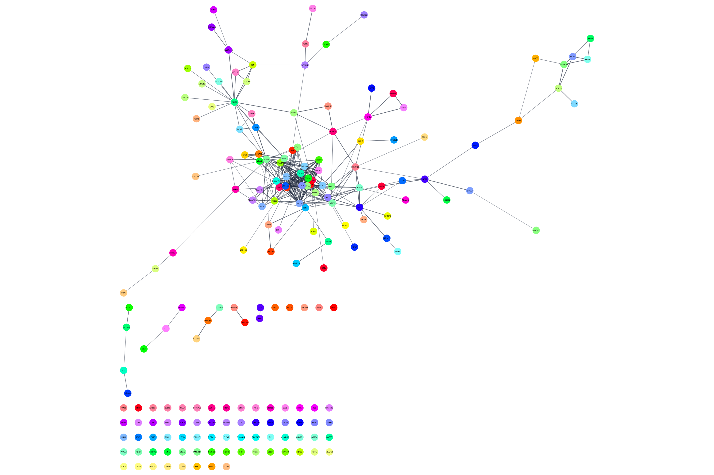

Differentially Expressed Genes Network Analysis
This protocol describes a network analysis workflow in Cytoscape for a set of differentially expressed genes. Points covered:
- Retrieving relevant networks from public databases
- Network functional enrichment analysis
- Integration and visualization of experimental data
- Exporting network visualizations

Setup
- If you haven't already, install the STRINGapp from the Cytoscape App Store, or install from Cytoscape via
Apps → App Manager ...
Background
Ovarian serous cystadenocarcinoma is a type of epithelial ovarian cancer which accounts for ~90% of all ovarian cancers. The data used in this protocol are from The Cancer Genome Atlas, in which multiple subtypes of serous cystadenocarcinoma were identified and characterized by mRNA expression.
We will focus on the differential gene expression between two subtypes, Mesenchymal and Immunoreactive.
For convenience, the data have already been analyzed and pre-filtered, using log fold change value and adjusted p-value.
Network Retrieval
Many public databases and multiple Cytoscape apps allow you to retrieve a network or pathway relevant to your data. For this workflow, we will use the STRING app. Some other options include:
Retrieve Networks from STRING
To identify a relevant network, we will query the STRING database in two different ways:
- Query STRING protein with the list of differentially expressed genes.
- Query STRING disease for ovarian cancer.
STRING Protein Query: Up-regulated genes
- Open the file containing the list of up-regulated genes, TCGA-Ovarian-MesenvsImmuno_UP.txt, and copy the contents to the clipboard.
- In the
Network Search bar at the top of theNetwork Panel , selectSTRING protein query from the drop-down, and paste in the list of up-regulated genes. - Open the options panel
 and confirm you are searching Homo sapiens with a cutoff of 0.4 and 0 maximum additional interactors.
and confirm you are searching Homo sapiens with a cutoff of 0.4 and 0 maximum additional interactors. - Click the search icon
 to search. The resulting network will load automatically.
to search. The resulting network will load automatically.
STRING Protein Query: Up-regulated genes
The resulting network contains up-regulated genes recognized by STRING, and interactions between them with an evidence score of 0.4 or greater.
Enrichment Analysis Options
Next, we are going to perform enrichment anlaysis uing the STRING app. Note that there are several other options, including:
- clusterProfiler: An R package for ORA and GSEA
- g-Profiler: An enrichment analysis website
- EnrichR: A website that performs enrichment against dozens of ontologies and pathway resources
- ClueGO: Creates and visualizes a functionally grouped network of terms/pathways
- BiNGO: GO overrepresentation analysis on networks
- EnrichmentMap: Visualize the results of gene-set enrichment as a network
STRING Enrichment
The STRING app has built-in enrichment analysis functionality, which includes enrichment for GO Process, GO Component, GO Function, InterPro, KEGG Pathways, and PFAM.
- With the STRING results network selected, go to
Apps → STRING Enrichment → Retrieve functional enrichment . - When the enrichment analysis is complete, a new tab titled
STRING Enrichment will open in theTable Panel .

STRING Enrichment
The STRING app includes several options for filtering and displaying the enrichment results. The features are all available at the top of the
- We are going to filter the table to only show GO Process. At the top left of the STRING enrichment tab, click the filter icon
 . Select
. Select GO Process and check theRemove redundant terms check-box. Then click OK. - Next, we will add a split donut chart to the nodes representing the top terms by clicking on
 .
. - Explore custom setting via
 in the top right of the STRING enrichment tab.
in the top right of the STRING enrichment tab.
STRING Protein Query: Down-regulated genes
Repeat the network search, enrichment analysis and visualization for the set of down-regulated genes:
- Query STRING protein with the list of symbols in TCGA-Ovarian-MesenvsImmuno_DOWN.txt.
- Perform STRING Enrichment analysis on the resulting network.
- Filter the analysis results for non-redundant GO Process terms only, add split donut charts. To distinguish between the visualizations of up- and down-regulated results, pick a different color palette under
Change Color Palette underSettings .
Pro-tip: If you remove the Fill Color mapping from the Style Panel (right-click > Edit > Remove...), set the default to light gray, change the split donut to a Pie Chart in
STRING Disease Query
Now, we will query the STRING disease database to retrieve a network of ovarian cancer associated genes, completely independent of our dataset.
- In the
Network Search bar at the top of theNetwork Panel , selectSTRING disease query from the drop-down, and type in ovarian cancer. - Click enter, or the search icon, to search.
This will bring in the top 100 ovarian cancer associated genes connected with a confidence score greater than 0.4. Note that because we removed the default STRING node fill color in the previous step, we have lost the "glass ball" effect. For this protocol we don't need it, but if you want to add back that effect, select
Data integration
Next we will import log fold changes and p-values from our TCGA dataset and use them to create a visualization. Since the network and data use different identifiers, we first have to do some quick identifier mapping. In this case, we will use the gene symbol in the display name column to retrieve Entrez Gene identifiers.
- In the
Table Panel , right-click on the column header for display name and selectMap column... . In theID Mapping interface, select Human as species, HGNC asMap from , and Entrez asTo . ClickOK to continue. - IDMapper displays a report of how many identifiers were mapped. Make note of this information as it impacts all down-stream analysis; If the mapping was unsuccessful, downstream analysis will be as well.
- Next, we can load the data. Download a local copy of TCGA-Ovarian-MesenvsImmuno_data.csv. Then go to
File → Import → Table from File... and select the data file.
Data integration
In the
Key Column for Network should beEntrez Gene .- In the data preview,
Gene ID should be the key, if not you can set it by right-clicking on the column header and selecting the key symbol. - The
Import Columns from Table interface should now look like this:

Visualization
To complete the import, click
- For node
Fill Color , first delete the existing mapping and then create a continuous mapping forlogFC , with the default blue-red gradient. - Change the default node
Fill Color to light grey.
Pro-tip: If you apply the
Visualization
The TCGA found several genes that were commonly mutated in ovarian cancer, so called "cancer drivers". We can add information about these genes to the network visualization, by changing the visual style of these nodes. Three of the most important drivers are TP53, BRCA1 and BRCA2. We will add a thicker, clored border for these genes in the network.
- Select all three driver genes by holding down the Command key while clicking each of the genes.
- In the
Style panel, add a style bypass for nodeBorder Width (5) and nodeBorder Paint (bright pink). You can create a style bypass by clicking theBypass (Byp.) column for each attribute.
The network will now look like this:

Other Analysis Options
- Exploring networks: finding paths, hubs and modules (clusterMaker, MCODE, jActiveModules, NetworkAnalyzer, PathFinder)
- Extending networks with Transcription Factors, miRNAs, etc using CyTargetLinker
Exporting Networks
Cytoscape provides a number of ways to export results and visualizations:
- As an image:
File → Export → Network to Image... - To a public repository:
File → Export → Network to NDEx , orFile → Export → Collection to NDEx - As a Cytoscape JSON file:
File → Export → Network to File and select Cytoscape.js JSON as the format.